ls(pattern = "^is", baseenv())Data Processing Tools
Introducció a les eines de R
Origen de R
Primer llançament: Ross Ihaka & Robert Gentleman (University of Auckland 1996)
Implementa un dialecte del llenguatge S (John Chambers, Rick Becker, Alan Wilks, AT&T Bell Laboratories 1976) (versió comercial S-PLUS)
Actualment, l’equip interinstitudicional “R Core Development Team”
The CRAN project (Comprehensive R Archive Network)
Introducció a R
R és un paquet estadístic gratuït molt flexible
Admet el análisis estadístic
Admet la gestió de dades de diferents fonts
Admet la visualització de la informació
Generació de paquets:
Admet la definició de noves funcions
Admet la definició de nous prodeciments (llenguatge de programació S)
Com utilitzar el R
Obrir el software:
Icone de l’escriptori
Seleccionar des de tots els programes
Amb interfaç addicionals (Rstudio, …)
Interactuar amb R:
Intèrpret d’ordres. Indicador:
>Escriure codi en la consola (si hi han diferents ordres, colapsar les ordres separats amb
;) i apretar el enterEs pot executar códi executant
CNTRL + ENTERVisualitzar la resposta al moment
Per sortir:
Codi:
q()Menú: Exit
Com anar a les ajudes
?helphelp(name_command)or?name_commandhelp.search("keyword"): Totes les ordres amb paraula clauhelp.stard(): Obre documentació on-line en R? 'operator': per a operacions o paraules reservades del llenguatge S?'if': Retorna l’ajut sobre sentencies condicionals.?'&&': Retorna l’ajut sobre conjuncions lógiques.
Existeix la opció
Helpen el menú
Obrir i recuperar una sessió
Es treballa en memoria (del PC)
q()Cancela tot el que no s’hagi guardat préviament (envia i avisa)Formes de guardar:
save.image()Crea un fitxer
.RDataEs pot recuperar en la següent sessió
Consulteu l’ajuda sobre com guardar i fer recuperacions parcials
utils::sessionInfo()Consultar les característiques de la sessió
Tipus de variables

Creació per defecte amb l’assignació:
<-o->Valors especials:
NA: per a dades mancantsInf: Infinit (divisió per 0, …)NaN: Error obtingut com a resultat d’aplicar una funció

Variables de tipus data
library(tidyverse)
library(lubridate)És un paquet creat amb la finalitat de manipular dates i dades de temps en R.
En tots els casos, s’ha de modificar la clase de les dades.
S’ha d’identificar el format en el que están les dades.
# Crea el format data
data <- as.Date(dades$data, format = "%y%m%d")
# Transforma les dades
library(lubridate)
dataLubri <- ymd(dades$data)Operacions amb dates
- Extreure l’any
year(dataLubri)- Extreure el mes
month(dataLubri)- Extreure el dia
day(dataLubri)- Diferencia de dates
difftime(data1, data2, units = "weeks")Obtenir informació
ls()oobjects(): Mostra tots els objectes de l’entorn de treballstr(object)oattributes(): Retorna informació de l’objecteEliminar objectes de l’entorn:
rm(object)rm(part1, part2, object)
Com utilitzar RStudio

Organització d’un projecte de R
Instalació de paquets
# Paquetes base y útiles:
packs <- c("here", "glue", "fs", "readr", "dplyr", "ggplot2")
to_install <- setdiff(packs, rownames(installed.packages()))
if (length(to_install)) install.packages(to_install, quiet = TRUE)
library(here) # Rutas relativas desde la raíz del proyecto
library(glue) # Strings con llaves {var}
library(fs) # Operaciones de sistema "friendly"
library(readr) # Lectura/escritura rápida
library(dplyr) # Manipulación de datos
library(ggplot2) # Gráficos
# Opciones útiles
options(
scipen = 999, # menos notación científica
digits = 4
)
# Mostrar dónde cree {here} que está la raíz del proyecto
here()Estructura recomanada de carpetes
La estructura proposada es la següent:
project/
├─ syntax/ # scripts R (funcions, notebooks, etc.)
├─ input/ # insumos externos (CSV, XLSX, etc.) només LECTURA
├─ data/ # dades intermitjes: netes/parquet/rds
├─ output/ # resultats finals (tables/figures/llistats)
├─ temp/ # temporals per eliminar
├─ logs/ # logs de ejecució
├─ README.md
└─ .here # marca de l'arrel del projecte p/ {here}Per crear l’estructura podem fer el següent:
# Crea l'estructura de carpetes si no existeixen
dirs <- c("syntax", "input", "data", "output", "temp", "logs")
dir_create(path = here(dirs))
dir_ls(here(), type = "directory")Usos de rutes relatives
Utilitza here("carpeta", "sub", "archivo.ext") per a rutas portables:
# Construir rutas de forma segura:
ruta_input <- here("input", "ventas_2025.csv")
ruta_data <- here("data", "ventas_limpio.rds")
ruta_salida <- here("output","resumen_ventas.csv")
ruta_input
ruta_data
ruta_salida
# Con base R: file.path() también es portable
file.path("input", "ventas_2025.csv")Bones pràctiques amb {here}
- Insertar un fitxer
.hereo un.Rprojen l’arrel. - Mai utilitzis
setwd()dintre d’un script reutilitzables. - Escriure funcions que rebin rutes com arguments o que construeixin rutes amb
here().
# Función ejemplo usando here()
lee_input <- function(nombre) {
readr::read_csv(here("input", nombre), show_col_types = FALSE)
}
# Uso:
# df <- lee_input("ventas_2025.csv")Missatges i nombre de fitxers dinàmics
anio <- 2025; mes <- 9
nombre_csv <- glue("ventas_{anio}-{sprintf('%02d', mes)}.csv")
here("input", nombre_csv)glue() evalua expressions dintre de {}:
clientes <- 1250
glue("Este mes se han registrado {clientes} clientes (Δ = {clientes - 1200}).")Crear i búsqueda de fitxers
Guardar fitxers
# Datos de ejemplo:
df <- tibble::tibble(
id = 1:5,
fecha = as.Date("2025-09-01") + 0:4,
ventas = c(100, 80, 95, 120, 110)
)
# Guardar como CSV en output/
write_csv(df, here("output", "tabla_ejemplo.csv"))
# Guardar como RDS en data/
saveRDS(df, here("data", "tabla_ejemplo.rds"))Búsqueda de fitxers
list.files() (base) y fs:dir_ls() (recursiu, amb globbing):
# Listado simple
list.files(here("output"))
# Listado recursivo con patrón:
dir_ls(here(), recurse = TRUE, glob = "output/*.csv")
# Buscar por ext. en múltiples carpetas:
dir_ls(here(c("input","data","output")), recurse = TRUE,
regexp = "\\.(csv|rds)$")Redirigir sortides amb sink()
log_path <- here("logs", glue("log_{format(Sys.time(), '%Y%m%d_%H%M%S')}.txt"))
sink(log_path, split = TRUE) # split=TRUE => también muestra en consola
cat("=== INICIO ===\n")
print(sessionInfo())
cat("Una línea cualquiera\n")
sink() # IMPORTANTÍSIMO: cerrar el sink
# Revisa el contenido del log:
readLines(log_path, n = 8)⚠️ Tanca SEMPRE el sink() amb sink() (sense arguments) o utilitza on.exit(sink()) dintre d’una funció per no “bloquejar” la consola.
Guardar gràfics
pdf(here("output", "grafico_demo.pdf"), width = 7, height = 5)
plot(cars, main = "Gráfico base R - cars")
dev.off()
# PNG con resolución
png(here("output", "grafico_demo.png"), width = 1200, height = 900, res = 150)
plot(pressure, main = "Gráfico base R - pressure")
dev.off()Amb ggplot2
p <- ggplot(mtcars, aes(disp, mpg)) + geom_point() +
labs(title = "Relación cilindrada vs. mpg")
# Guardar directamente
ggsave(filename = here("output", "mtcars_disp_mpg.png"), plot = p,
width = 7, height = 5, dpi = 150)
# También PDF
ggsave(filename = here("output", "mtcars_disp_mpg.pdf"), plot = p,
width = 7, height = 5)Mini pipeline de exemple
A continuació tens un exemple de un pipeline que: leer → procesar → guardar
# 1) Crear un CSV de ejemplo en input/
dir_create(here("input"))
toy <- tibble::tibble(
id = 1:10,
fecha = as.Date("2025-09-01") + 0:9,
ventas = sample(80:150, 10, replace = TRUE)
)
write_csv(toy, here("input", "toy_ventas.csv"))
# 2) Leer, procesar y registrar
log_path <- here("logs", "mini_pipeline.log")
sink(log_path, split = TRUE)
cat("== MINI PIPELINE ==\n")
raw <- read_csv(here("input", "toy_ventas.csv"), show_col_types = FALSE)
cat(glue("Leídas {nrow(raw)} filas.\n"))
proc <- raw |>
mutate(
semana = format(fecha, "%Y-%W"),
ventas_norm = scale(ventas)[,1]
) |>
group_by(semana) |>
summarise(ventas_media = mean(ventas), .groups = "drop")
cat(glue("Semanas agregadas: {nrow(proc)}\n"))Mini pipeline de exemple
A continuació tens un exemple de un pipeline que: leer → procesar → guardar
# 3) Guardar resultados
write_csv(proc, here("output", "resumen_semanal.csv"))
saveRDS(proc, here("data", "resumen_semanal.rds"))
cat("Archivos guardados en output/ y data/\n")
sink()
# 4) Graficar y guardar
p <- ggplot(raw, aes(fecha, ventas)) + geom_line() +
labs(title = "Ventas diarias (toy)", x = "Fecha", y = "Ventas")
ggsave(here("output", "ventas_toy.png"), plot = p, width = 7,
height = 5, dpi = 150)Utilitats (helpers) per als teus scripts de syntax/
# Guardar en syntax/helpers.R y luego source("syntax/helpers.R") si quieres
init_log <- function(prefix = "run") {
dir_create(here("logs"))
path <- here("logs",
glue("{prefix}_{format(Sys.time(), '%Y%m%d_%H%M%S')}.log"))
sink(path, split = TRUE)
cat(glue("[{Sys.time()}] INICIO\n"))
return(path)
}
close_log <- function() {
cat(glue("[{Sys.time()}] FIN\n"))
sink()
}
safe_dir <- function(...) {
# Crea una ruta y la carpeta si no existe
path <- here(...)
dir_create(dirname(path))
return(path)
}
save_table <- function(df, ..., name, ext = "csv") {
# Guarda tabla df en output/ con nombre dinámico
base <- glue("{name}.{ext}")
path <- safe_dir("output", base)
if (ext == "csv") readr::write_csv(df, path)
if (ext == "rds") saveRDS(df, sub("\\.csv$", ".rds", path))
invisible(path)
}Pautes de versionat i neteja
- Tot el que NO sigui una font, s’ha de ficar sota control (ej: borrar
/temp/al finalitzar) - Utilitzar
gitper a versionar scripts i notebooks. - Separar la lectura (
input/) de resultats (output/) i dades de treball (data/).
# Limpieza de temporales
if (dir_exists(here("temp"))) {
file_delete(dir_ls(here("temp"), recurse = TRUE, type = "file"))
}Alternatives útils
fs::file_copy(),fs::file_move(),fs::file_delete()per a copiar/moure/esborrar.Sys.getenv("VAR")per a llegir variables d’entorn.withr::with_dir()per executar codi en otra ubicació sense canviar elwdglobal.
# Copiar un archivo de ejemplo
fs::file_copy(here("output", "tabla_ejemplo.csv"),
here("temp", "copia_tabla.csv"),
overwrite = TRUE)
# Variables de entorno
Sys.getenv("HOME")Enviar correus automàtics

El paquet blastula facilita la creació i l’enviament de correus electrònics HTML desde R.
El missatge pot tenir 3 areas de contingut (cos, capçalera i peu de pàgina) i permet insertar text Markdown, components basats en blocs i inclús fragments d’HTML.
El HTML/CSS subjacent està dissenyat per a visualitzar-se correctament en una amplia gamma de clients de correu electrónic i serveis de correu web.
El missatge resultant és responde, pel que que es veurà genial tant en pantalles grans com en dispositius mòbils.
Enviar correus automàtics

# Get a nicely formatted date/time string
date_time <- add_readable_time()
# Create an image string using an on-disk
# image file
img_file_path <-
system.file(
"img", "pexels-photo-267151.jpeg",
package = "blastula"
)
img_string <- add_image(file = img_file_path)
email <-
compose_email(
body = md(glue::glue(
"Hello,
This is a *great* picture I found when looking
for sun + cloud photos:
{img_string}
")),
footer = md(glue::glue("Email sent on {date_time}."))
)Introducció al R Markdown
Qué és un R Markdown?
“Un format de fitxers per a fer documents dinàmics amb R..” (✔️)
Mágia (🧙♂️)
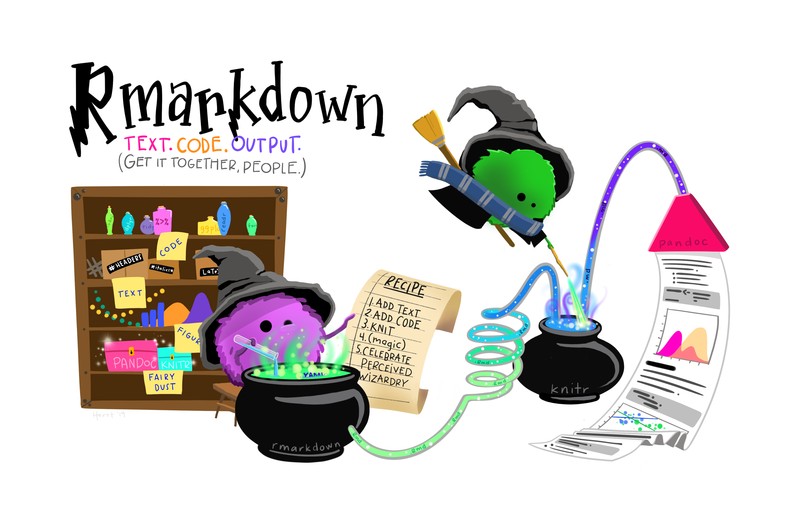
Crisis de reproducibilitat?

Accés a R Markdown
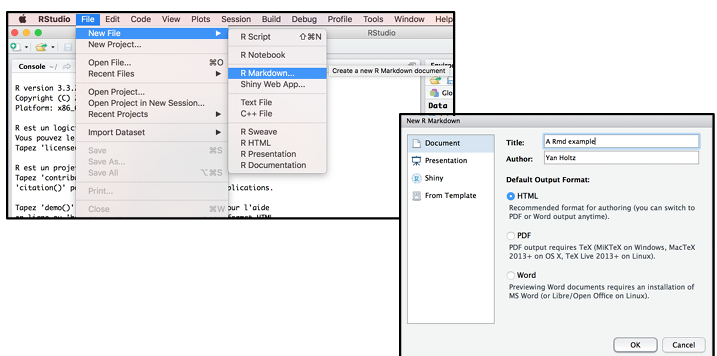
Anatomia d’un fitxer .Rmd
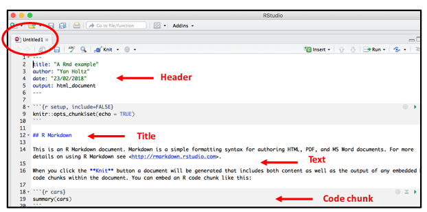
Execució (knitr) del fitxer .Rmd
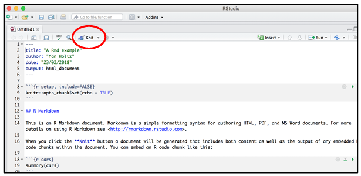
Outputs obtinguts
- En el directori de treball trobem els outputs obtinguts
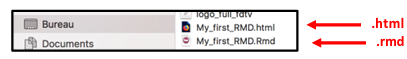
- També se’ns obrirà en html
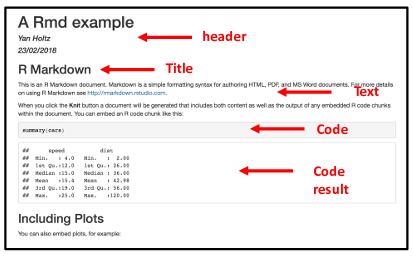
Anatomia de les funcións dels chunks
- Es poden generar executant
CNTRL + Mayús + i
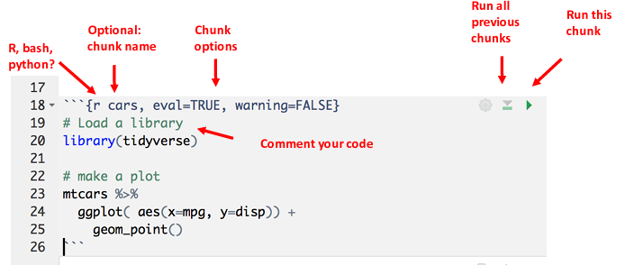
Opcions dels chunks
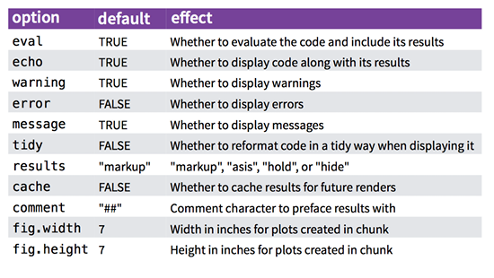
Anatomia dels Header
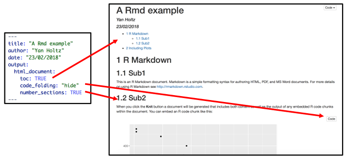
Formats possibles
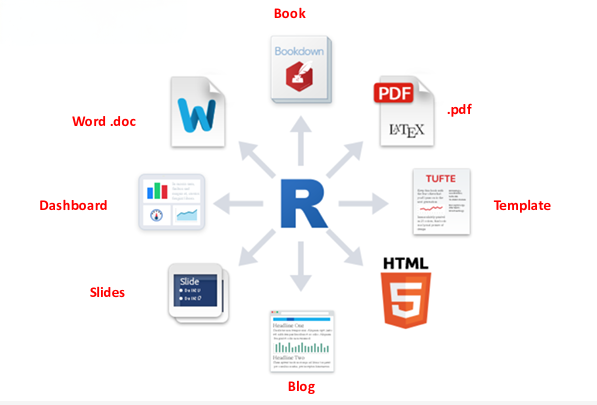
Introducció a la visualització amb ggplot2
Tipus de software que s’aplica
Base R

Tidyverse

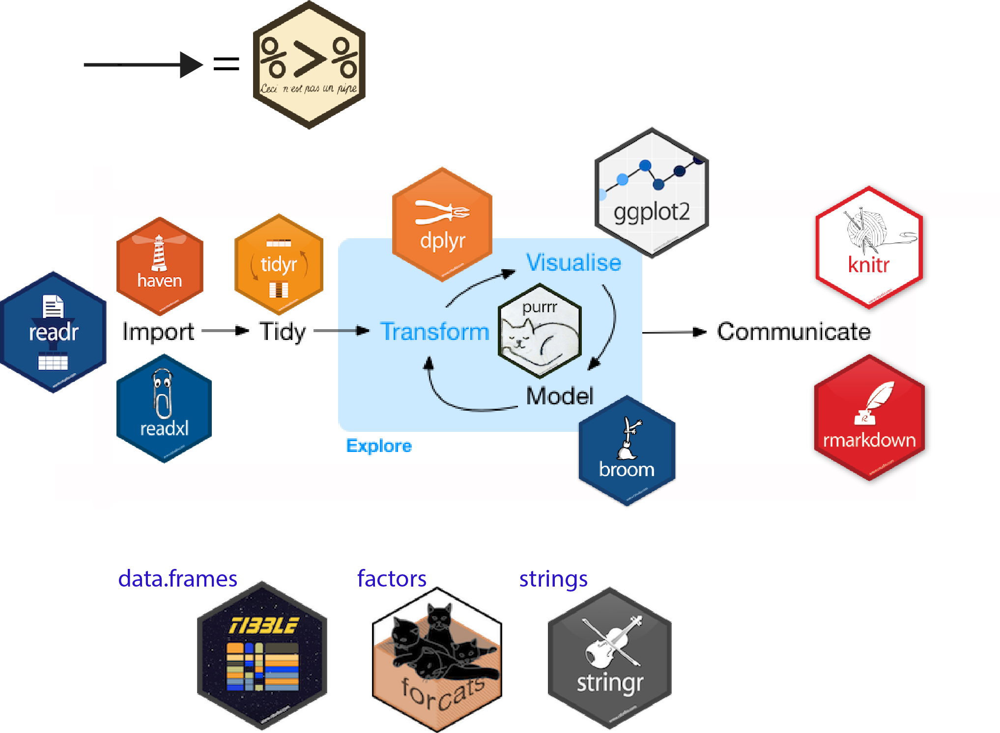
Tipus de software que s’aplica
Base R
data[, "variable"]Tidyverse

data %>%
select(variable)Tipus de software que s’aplica
Base R
quien <- which(data$var2 == "categoria")
data[quien, c("var1", "var2", "var3")]Tidyverse

data %>%
select(var1, var2, var3) %>%
filter(var2 == "categoria")Paquet ggplot2

- Paquet de R, creat per Hadley Wickham

- Basat en el llenguatge de programació: “Grammar of Graphic”
library(ggplot2)
Estructura de la construcció dels gràfics

ggplot()
Estructura de la construcció dels gràfics

ggplot(data = iris)
Estructura de la construcció dels gràfics

ggplot(data = iris, aes(x = Sepal.Length, y = Sepal.Width))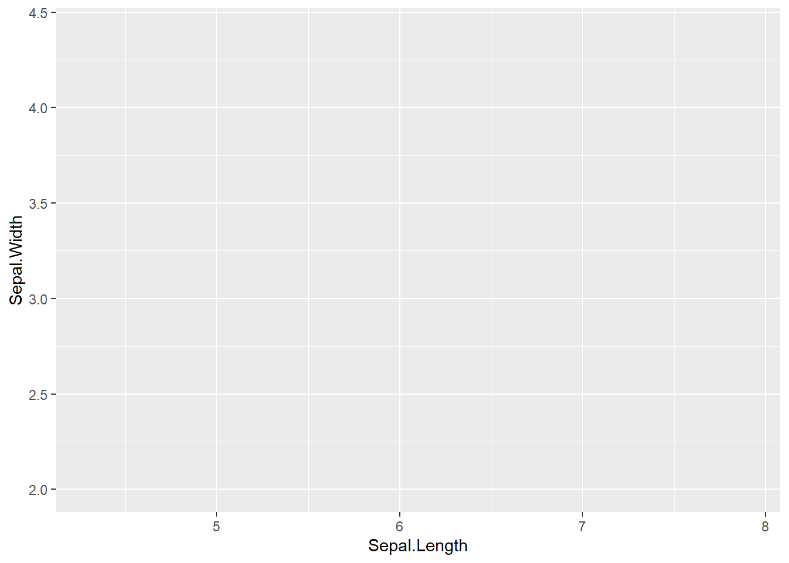
Estructura de la construcció dels gràfics

ggplot(data = iris, aes(x = Sepal.Length, y = Sepal.Width)) +
geom_point()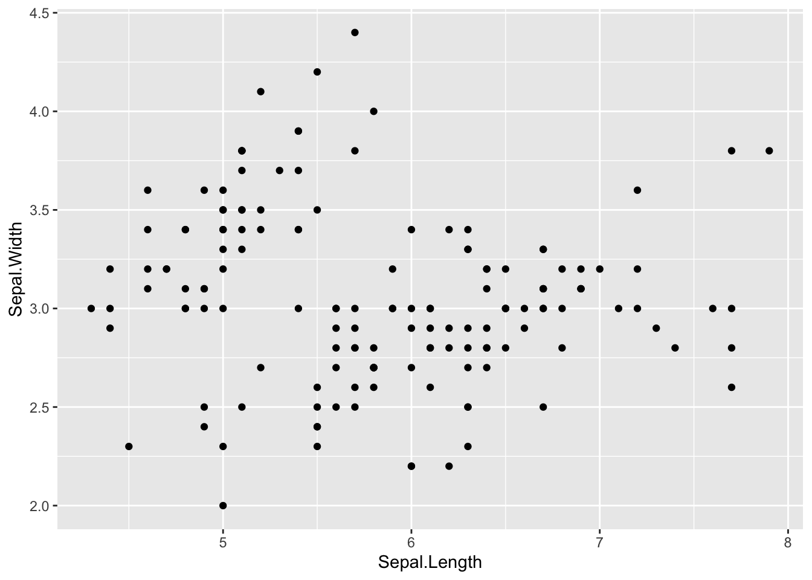
Estructura de la construcció dels gràfics

ggplot(data = iris, aes(x = Sepal.Length, y = Sepal.Width)) +
geom_point(color = "blue")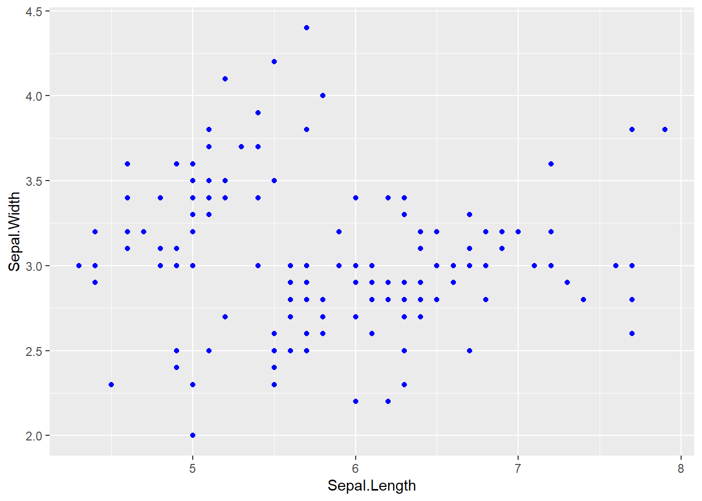
Estructura de la construcció dels gràfics

ggplot(data = iris, aes(x = Sepal.Length, y = Sepal.Width, color = Sepal.Length)) +
geom_point()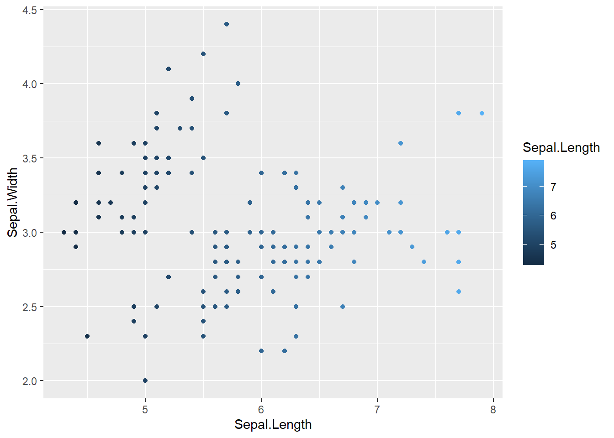
Estructura de la construcció dels gràfics

ggplot(data = iris, aes(x = Sepal.Length, y = Sepal.Width, color = Sepal.Length)) +
geom_point() +
ggtitle("Scatterplot de Iris")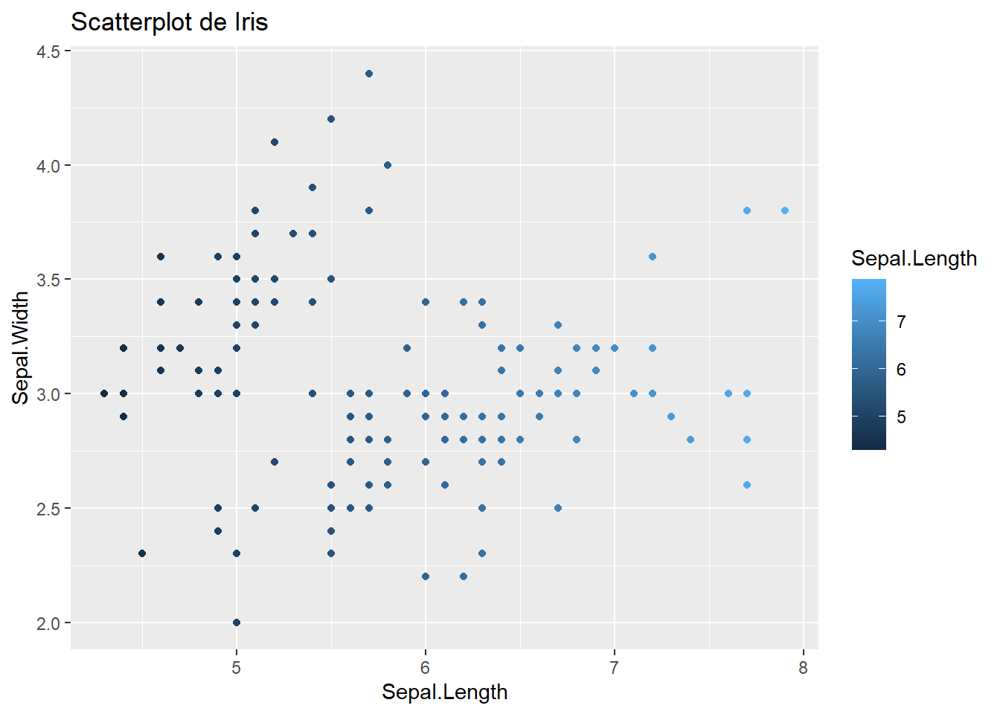
Tipus de gràfics segons descriptiva
flowchart TB
A["<div style='width:120px; text-align:center;'>
<b>Descriptiva<br>Univariant</b>
</div>"]
B1["<div style='width:120px; text-align:center;'>
<b>Descriptiva de <br> vars. Numèriques</b>
</div>"]
B2["<div style='width:120px; text-align:center;'>
<b>Descriptiva de <br> vars. Categòriques</b>
</div>"]
C11["<div style='width:120px; text-align:center;'>
<b>Informació<br>Numériques</b>
</div>"]
C12["<div style='width:120px; text-align:center;'>
<b>Informació<br>Visual</b>
</div>"]
C21["<div style='width:120px; text-align:center;'>
<b>Informació<br>Numériques</b>
</div>"]
C22["<div style='width:120px; text-align:center;'>
<b>Informació<br>Visual</b>
</div>"]
D1["<div style='text-align:center; font-size:20px; font-family:monospace;'>
psych::describe() </div>"]
D2["<div style='text-align:center;'>
<code>geom_histogram()</code><br><br>
<img src='imagenes/hist.png' width='120'>
</div>"]
D3["<div style='text-align:center;'>
<code>geom_boxplot()</code><br><br>
<img src='imagenes/boxplot.png' width='120'>
</div>"]
D4["<div style='text-align:center; font-size:20px; font-family:monospace;'>
table() </div>"]
D5["<div style='text-align:center;'>
<code>geom_bar()</code><br><br>
<img src='imagenes/barplot.png' width='120'>
</div>"]
A --> B1
A --> B2
B1 --> C11
B1 --> C12
B2 --> C21
B2 --> C22
C11 --> D1
C12 --> D2
C12 --> D3
C21 --> D4
C22 --> D5
style A fill:#F9D990,color:#1B4F72,stroke:#1B4F72,stroke-width:2px
style B1 fill:#BCE9FB,color:#1B4F72,stroke:#1B4F72,stroke-width:2px
style B2 fill:#F9A290,color:#1B4F72,stroke:#1B4F72,stroke-width:2px
style C11 fill:#BCE9FB,color:#1B4F72,stroke:#1B4F72,stroke-width:2px
style C12 fill:#BCE9FB,color:#1B4F72,stroke:#1B4F72,stroke-width:2px
style C21 fill:#F9A290,color:#1B4F72,stroke:#1B4F72,stroke-width:2px
style C22 fill:#F9A290,color:#1B4F72,stroke:#1B4F72,stroke-width:2px
style D1 fill:#FFFFFF,color:#1B4F72,stroke:#FFFFFF,stroke-width:2px
style D2 fill:#FFFFFF,color:#1B4F72,stroke:#FFFFFF,stroke-width:2px
style D3 fill:#FFFFFF,color:#1B4F72,stroke:#FFFFFF,stroke-width:2px
style D4 fill:#FFFFFF,color:#1B4F72,stroke:#FFFFFF,stroke-width:2px
style D5 fill:#FFFFFF,color:#1B4F72,stroke:#FFFFFF,stroke-width:2px
`
Tipus de gràfics segons descriptiva
flowchart TB
A["<div style='width:120px; text-align:center;'>
<b>Descriptiva<br>Bivariant</b>
</div>"]
B1["<div style='width:120px; text-align:center;'>
<b>Var. Numèrica vs.<br> Var. Numèrica</b>
</div>"]
B2["<div style='width:120px; text-align:center;'>
<b>Var. Categòrica vs. <br> Var. Categòrica</b>
</div>"]
B3["<div style='width:120px; text-align:center;'>
<b>Var. Numèrica vs.<br> Var. Categòrica</b>
</div>"]
C11["<div style='width:120px; text-align:center;'>
<b>Informació<br>Numériques</b>
</div>"]
C12["<div style='width:120px; text-align:center;'>
<b>Informació<br>Visual</b>
</div>"]
C21["<div style='width:120px; text-align:center;'>
<b>Informació<br>Numériques</b>
</div>"]
C22["<div style='width:120px; text-align:center;'>
<b>Informació<br>Visual</b>
</div>"]
C31["<div style='width:120px; text-align:center;'>
<b>Informació<br>Numériques</b>
</div>"]
C32["<div style='width:120px; text-align:center;'>
<b>Informació<br>Visual</b>
</div>"]
D1["<div style='text-align:center; font-size:20px; font-family:monospace;'>
cor() </div>"]
D2["<div style='text-align:center; font-size:16px;'>
<code>geom_point()</code><br><br>
<img src='imagenes/scatterplot.png' width='120'>
</div>"]
D3["<div style='text-align:center; font-size:20px; font-family:monospace;'>
table() </div>"]
D4["<div style='text-align:center; font-size:16px;'>
<code>geom_bar()</code><br><br>
<img src='imagenes/barplot2.png' width='120'>
</div>"]
D5["<div style='text-align:center; font-size:20px; font-family:monospace;'>
psych::describeBy() </div>"]
D6["<div style='text-align:center; font-size:16px;'>
<code>geom_hist()</code><br><br>
<img src='imagenes/hist.png' width='120'>
</div>"]
D7["<div style='text-align:center; font-size:16px;'>
<code>geom_boxplot()</code><br><br>
<img src='imagenes/boxplot.png' width='120'>
</div>"]
A --> B1
A --> B2
A --> B3
B1 --> C11
B1 --> C12
B2 --> C21
B2 --> C22
B3 --> C31
B3 --> C32
C11 --> D1
C12 --> D2
C21 --> D3
C22 --> D4
C31 --> D5
C32 --> D6
C32 --> D7
style A fill:#F9D990,color:#1B4F72,stroke:#1B4F72,stroke-width:2px
style B1 fill:#BCE9FB,color:#1B4F72,stroke:#1B4F72,stroke-width:2px
style B2 fill:#F9A290,color:#1B4F72,stroke:#1B4F72,stroke-width:2px
style B3 fill:#C2FFAB,color:#1B4F72,stroke:#1B4F72,stroke-width:2px
style C11 fill:#BCE9FB,color:#1B4F72,stroke:#1B4F72,stroke-width:2px
style C12 fill:#BCE9FB,color:#1B4F72,stroke:#1B4F72,stroke-width:2px
style C21 fill:#F9A290,color:#1B4F72,stroke:#1B4F72,stroke-width:2px
style C22 fill:#F9A290,color:#1B4F72,stroke:#1B4F72,stroke-width:2px
style C31 fill:#C2FFAB,color:#1B4F72,stroke:#1B4F72,stroke-width:2px
style C32 fill:#C2FFAB,color:#1B4F72,stroke:#1B4F72,stroke-width:2px
style D1 fill:#FFFFFF,color:#1B4F72,stroke:#FFFFFF,stroke-width:2px
style D2 fill:#FFFFFF,color:#1B4F72,stroke:#FFFFFF,stroke-width:2px
style D3 fill:#FFFFFF,color:#1B4F72,stroke:#FFFFFF,stroke-width:2px
style D4 fill:#FFFFFF,color:#1B4F72,stroke:#FFFFFF,stroke-width:2px
style D5 fill:#FFFFFF,color:#1B4F72,stroke:#FFFFFF,stroke-width:2px
style D6 fill:#FFFFFF,color:#1B4F72,stroke:#FFFFFF,stroke-width:2px
style D7 fill:#FFFFFF,color:#1B4F72,stroke:#FFFFFF,stroke-width:2px
CheetSheet

Percepció de la informació

Percepció de la informació
Adjuntando el paquete: 'dplyr'The following objects are masked from 'package:stats':
filter, lagThe following objects are masked from 'package:base':
intersect, setdiff, setequal, unionWarning: Using `size` aesthetic for lines was deprecated in ggplot2 3.4.0.
ℹ Please use `linewidth` instead.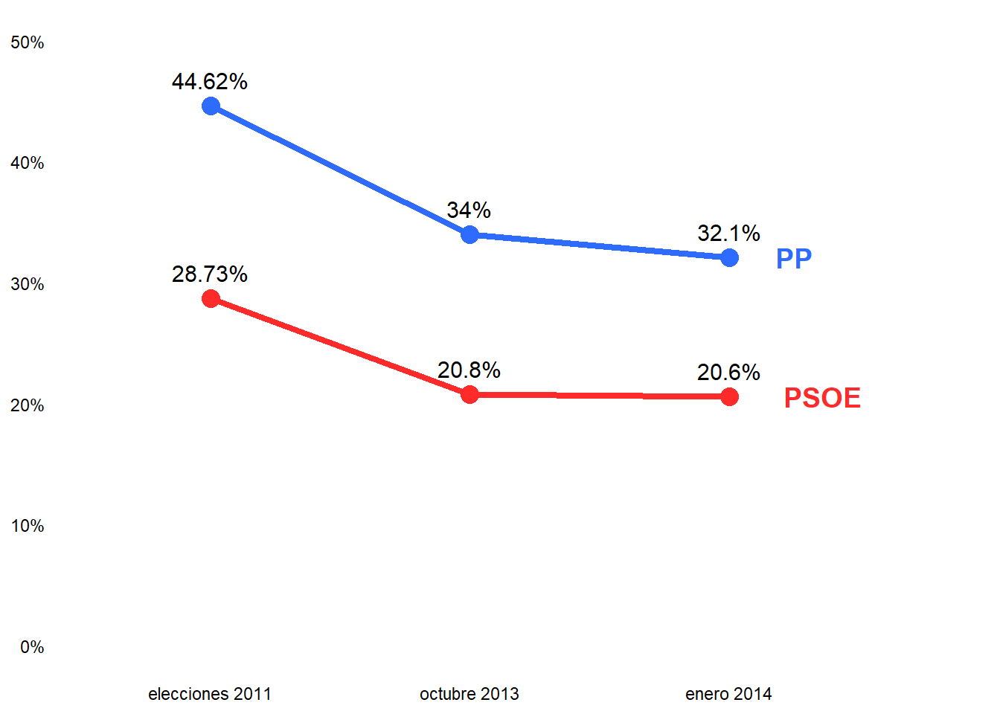
Percepció de la informació
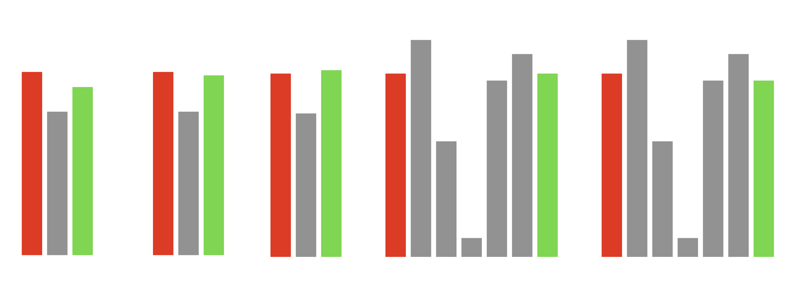
Percepció de la informació
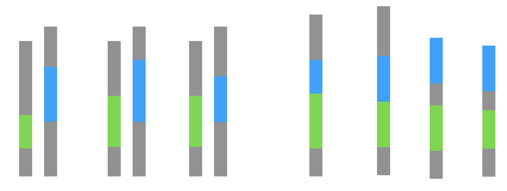
Percepció de la informació
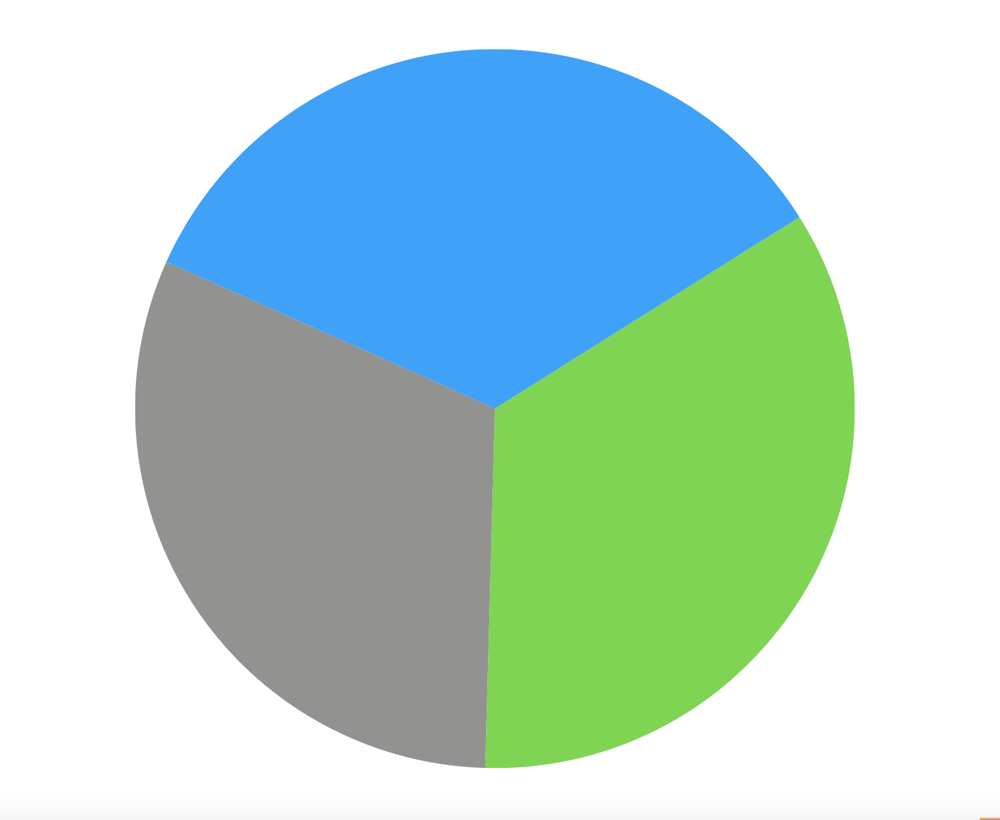
Percepció de la informació
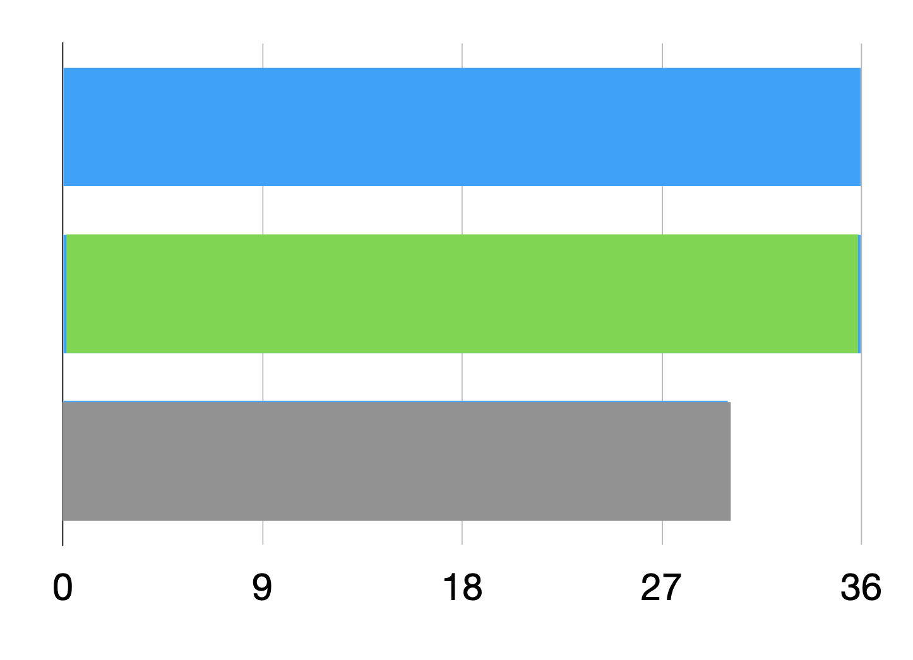
Percepció de la informació
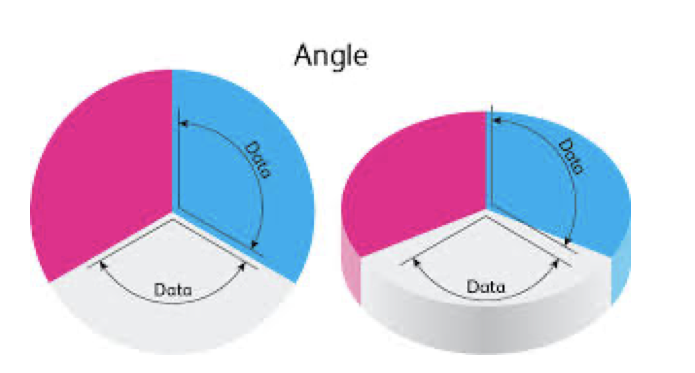
Percepció de la informació
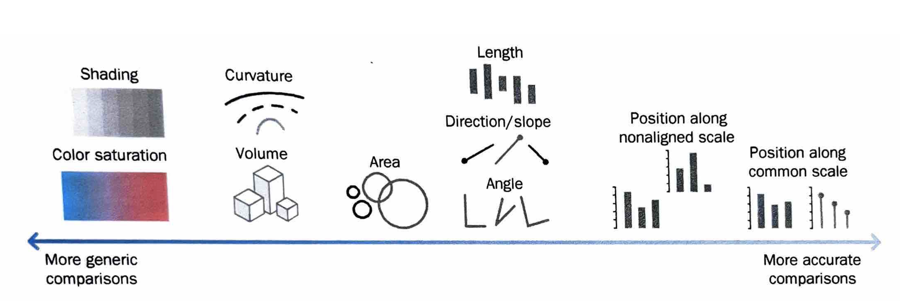
Aquesta web està creada por Dante Conti y Sergi Ramírez, (c) 2026